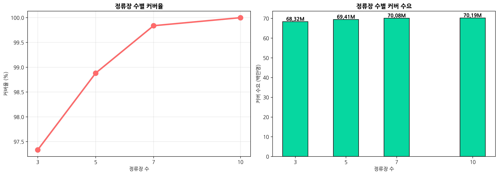
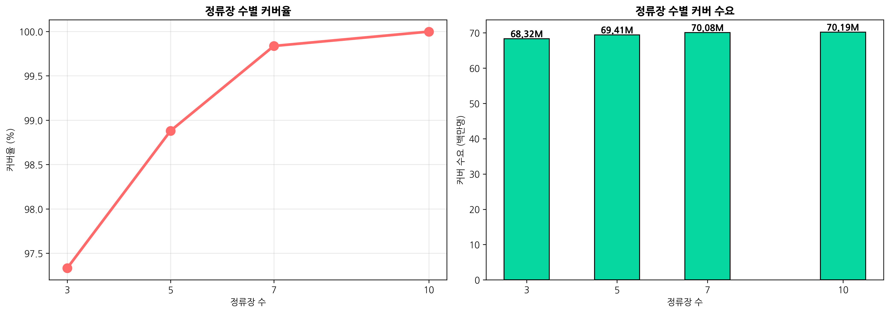

🚌 세종시 버스 정류장 최적화 분석 리포트
분석 일시: 2025년 12월 02일 07:10
분석 방법: GPS 기반 정밀 분석 + 정수계획법 최적화
📊 핵심 지표
분석 지역
23
총 이용객
70.2M
신규 정류장
5
커버리지
98.9%
🎯 최적화 결과
선정된 신규 정류장 위치
| 순위 | 행정구역 | 이용객 | 건물수 | GPS 좌표 |
|---|---|---|---|---|
| 1 | 조치원읍 | 11,330,610명 | 8,512개 | (36.6023, 127.2939) |
| 2 | 나성동 | 3,506,260명 | 196개 | (36.5036, 127.2476) |
| 3 | 금남면 | 1,508,687명 | 6,532개 | (36.4547, 127.2923) |
| 4 | 전의면 | 660,406명 | 5,217개 | (36.6693, 127.1960) |
| 5 | 전동면 | 425,519명 | 4,932개 | (36.6515, 127.2529) |
📈 분석 결과
 

🗺️ 인터랙티브 지도
💡 결론 및 권장사항
주요 발견사항
- 5개 정류장으로 98.9% 수요 커버 가능
- 실제 GPS 거리 기반 정밀 분석 수행
- 수요, 건물밀도, 환승 패턴을 종합 고려한 최적화
권장사항
- 상위 3개 지역부터 우선 설치 권장
- 기존 정류장과의 중복 확인 필요
- 도로 접근성 및 토지 이용 가능성 현장 조사 필요
본 분석은 2023년 데이터 기반으로 수행되었습니다.